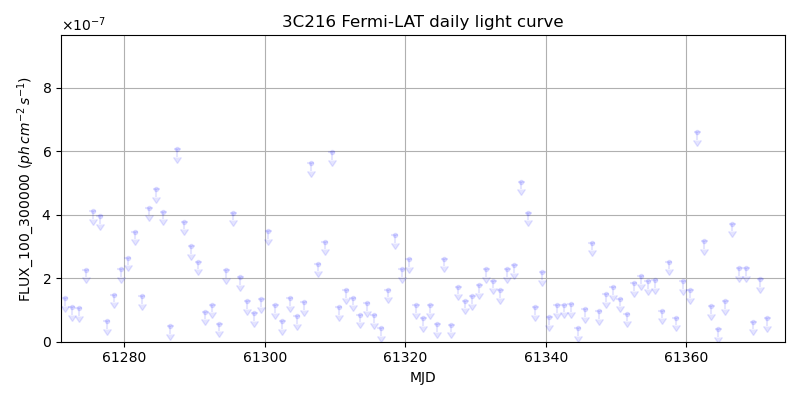
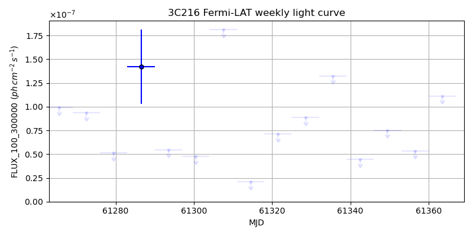
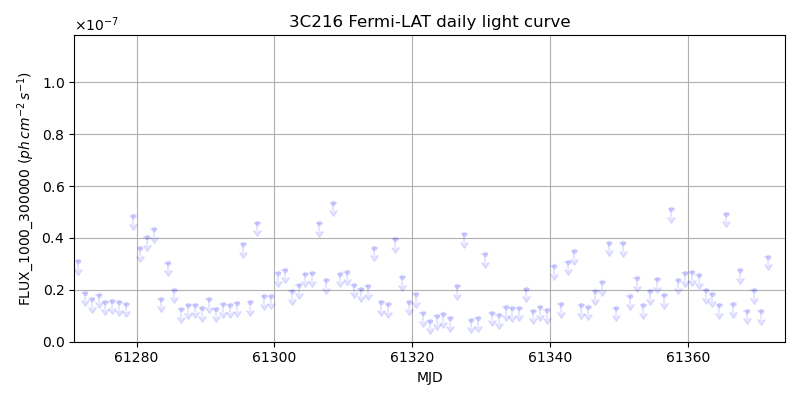
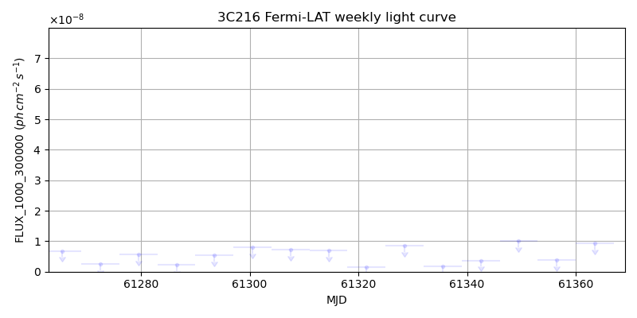

LAT Lightcurve site: https://fermi.gsfc.nasa.gov/ssc/data/access/lat/msl_lc/source/3C_216
NED: Query
Time of last update of this page: UT: 2026-11-20 16:20 (MJD: 61364.681)
| Property | Value |
|---|---|
| R.A. | 9:09:33.60 |
| Dec. | 42:53:45.6 |
| z | 0.670 |
| 3FGL SpectrumType | |
| 3FGL PL Index | -1.00 |
| 3FGL Flux_100_300000 | -1.00e+00 |
| 3FGL Flux_1000_300000 | -1.00e+00 |
| 3FGL Flux >200 GeV | -1.00e+00 |
| 3FGL Extrap. Crab >200 GeV | -1.00 |
| 3FGL Flux After EBL Absorption >200GeV | -1.00e+00 |
| 3FGL EBL Crab Fraction >200GeV | -1.00 |

| MJD | dMJD | Flux | dFlux | Frac3FGL | FracCrab>200GeV | EBLFracCrab>200GeV |
|---|---|---|---|---|---|---|
| 61359.50 | 0.50 | 1.91e-07 | 0.00e+00 | 0.00 | 0.00 | -0.00 |
| 61360.50 | 0.50 | 1.62e-07 | 0.00e+00 | 0.00 | 0.00 | -0.00 |
| 61361.50 | 0.50 | 6.60e-07 | 0.00e+00 | 0.00 | 0.00 | -0.00 |
| 61362.50 | 0.50 | 3.17e-07 | 0.00e+00 | 0.00 | 0.00 | -0.00 |
| 61363.50 | 0.50 | 1.13e-07 | 0.00e+00 | 0.00 | 0.00 | -0.00 |

| MJD | dMJD | Flux | dFlux | Frac3FGL | FracCrab>200GeV | EBLFracCrab>200GeV |
|---|---|---|---|---|---|---|
| 61328.50 | 3.50 | 8.87e-08 | 0.00e+00 | 0.00 | 0.00 | -0.00 |
| 61335.50 | 3.50 | 1.32e-07 | 0.00e+00 | 0.00 | 0.00 | -0.00 |
| 61342.50 | 3.50 | 4.46e-08 | 0.00e+00 | 0.00 | 0.00 | -0.00 |
| 61349.50 | 3.50 | 7.51e-08 | 0.00e+00 | 0.00 | 0.00 | -0.00 |
| 61356.50 | 3.50 | 5.34e-08 | 0.00e+00 | 0.00 | 0.00 | -0.00 |

| MJD | dMJD | Flux | dFlux | Frac3FGL | FracCrab>200GeV | EBLFracCrab>200GeV |
|---|---|---|---|---|---|---|
| 61359.50 | 0.50 | 2.63e-08 | 0.00e+00 | 0.00 | 0.00 | -0.00 |
| 61360.50 | 0.50 | 2.69e-08 | 0.00e+00 | 0.00 | 0.00 | -0.00 |
| 61361.50 | 0.50 | 2.57e-08 | 0.00e+00 | 0.00 | 0.00 | -0.00 |
| 61362.50 | 0.50 | 1.99e-08 | 0.00e+00 | 0.00 | 0.00 | -0.00 |
| 61363.50 | 0.50 | 1.86e-08 | 0.00e+00 | 0.00 | 0.00 | -0.00 |

| MJD | dMJD | Flux | dFlux | Frac3FGL | FracCrab>200GeV | EBLFracCrab>200GeV |
|---|---|---|---|---|---|---|
| 61328.50 | 3.50 | 8.52e-09 | 0.00e+00 | 0.00 | 0.00 | -0.00 |
| 61335.50 | 3.50 | 1.87e-09 | 0.00e+00 | 0.00 | 0.00 | -0.00 |
| 61342.50 | 3.50 | 3.64e-09 | 0.00e+00 | 0.00 | 0.00 | -0.00 |
| 61349.50 | 3.50 | 1.01e-08 | 0.00e+00 | 0.00 | 0.00 | -0.00 |
| 61356.50 | 3.50 | 3.72e-09 | 0.00e+00 | 0.00 | 0.00 | -0.00 |
--------------------------------------------------------- Using user-supplied coords: 9:09:33.60 42:53:45.6 2000 --------------------------------------------------------- FLWO UT night of: 2026-11-21 Local Sid. @ Midnight: 03:37 Sunset (-15.0) (local, UT): 18:33 01:33 Sunrise (-15.0) (local, UT): 05:47 12:47 Moonrise (local, UT): Moonset (local, UT): 03:40 10:40 Moon phase: 0.85 --------------------------------------------------------- AzTime LSID UT Obj_el Obj_az Mn_el Mn_az Sep. --------------------------------------------------------- 18:33 22:09 01:33 -14.4 10.9 47.9 117.4 111.6 19:03 22:39 02:03 -12.9 16.3 53.3 125.0 111.4 19:33 23:09 02:33 -10.8 21.6 58.2 134.7 111.2 20:03 23:39 03:03 -8.2 26.5 62.3 146.9 111.0 20:33 00:09 03:33 -4.5 31.1 65.1 162.1 110.8 21:03 00:39 04:03 -0.8 35.4 66.3 179.7 110.6 21:33 01:09 04:33 2.6 39.3 65.4 197.5 110.4 22:03 01:39 05:03 6.6 42.9 62.9 213.2 110.2 22:33 02:09 05:33 11.1 46.1 59.0 225.9 110.0 23:03 02:39 06:03 15.8 49.0 54.2 235.9 109.9 23:33 03:09 06:33 20.7 51.7 48.9 243.9 109.7 00:03 03:39 07:03 25.8 54.0 43.2 250.4 109.5 00:33 04:10 07:33 31.0 55.9 37.3 255.9 109.2 01:03 04:40 08:03 36.4 57.5 31.2 260.7 109.0 01:33 05:10 08:33 41.8 58.7 25.1 265.1 108.8 02:03 05:40 09:03 47.3 59.5 19.0 269.2 108.6 02:33 06:10 09:33 52.8 59.5 12.9 273.0 108.4 03:03 06:40 10:03 58.3 58.7 6.8 276.9 108.1 03:33 07:10 10:33 63.7 56.4 1.0 280.7 107.9 04:03 07:40 11:03 68.9 51.8 -4.9 284.7 107.6 04:33 08:10 11:33 73.7 43.0 -11.1 288.8 107.3 05:03 08:40 12:03 77.4 26.4 -16.8 293.2 107.1 05:33 09:10 12:33 78.9 0.4 -22.3 298.1 106.8 05:47 09:25 12:47 78.6 347.0 -24.8 300.5 106.7 --------------------------------------------------------- Dark hours >55 deg.: 2.11 srcstart (UT): 2026-11-21 10:40 srcend (UT): 2026-11-21 12:46